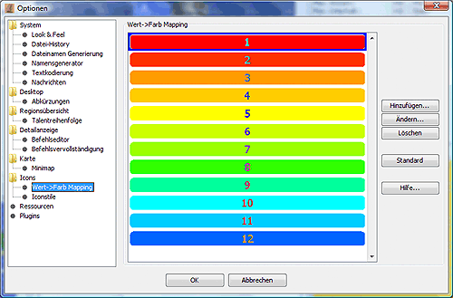
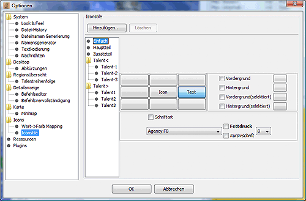

Icons
Iconeinstellungen

Zeige Kurzinfo: Ist diese Option aktiviert, erhält man bei etwas
längerem Verweilen des Mauszeigers über einem Icon den dazugehörigen
Talent- oder Gebäudenamen, den das Icon repräsentiert.
Nachrichten/Details/Regionen: In dem jeweiligen Bereich sind die
Optionen zusammenfefasst, die sich auf der jeweilige Panel beziehen.
In Abhängigkeit von dem jeweiligen Bereich werden verschiedene
Unteroptionen in der Form von Reitern am linken Rand zur Verfügung
gestellt. Die Feineinstellung der jeweiligen Unteroptionen erfolgt in
einem extra Fenster, das sich durch Betätigung der Schaltfläche
Details öffnen lässt.
-
Einheiten-Reiter
Dieser Reiter bezieht sich auf die Zeile, in der der Name der Einheit
steht. Zusätzlich zu dem Namen können noch weitere Informationen
angezeigt werden.
-
Zeige zusätzliche Icons und Texte
zeigt Icons für Talente, Gegenstände und Aufenthaltsort der
Einheit an.
-
Talentänderungen anzeigen
wenn man einen zusätzlich einen Report der Vorwoche geladen hat,
lassen sich damit Talentänderungen anzeigen.
-
Gegenstände kategorisieren
Fasst unterschiedliche Gegenstände zusammen, z.B. alle Waffen.
-
Talente-Reiter
Dieser Reiter bezieht sich auf die aufklappbaren Zeilen unterhalt des
Einheitennamens im Detailfenster, die die unterschiedlichen Talente der
Einheit beinhalten.
-
Zeige Informationen zum nächsten Level
zeigt an wie lange noch bis zum nächsten Level gelern werden muss,
sofern dies vom Spiel unterstützt wird.
-
Talentänderungen anzeigen
wenn man einen zusätzlich einen Report der Vorwoche geladen hat,
lassen sich damit Talentänderungen anzeigen.
-
Gegenstände-Reiter
Dieser Reiter bezieht sich auf die aufklappbaren Zeilen unterhalt des
Einheitennamens im Detailfenster, die die Gegenstände der Einheit
auflisten.
-
Regionsanzahl anzeigen
zeigt hinter den Gegenständen die Gesamtanzahl der Gegenstände in
der Region an.
-
Einfach-Reiter
Dieser Reiter bezieht sich auf die sonstigen Zeilen im Detailfenster.
-
Zeige Icons
zeigt zu Beginn der Zeile ein Icon, sofern für die angezeigte
Information eins existiert.
Wert->Farbmapping

Hier kann die Schriftfarbe für die Talentwertanzeige im Regionsfenster
nach Talentwerten konfiguriert werden. Sind hier keine Farben definiert,
so wird schwarz verwendet.
Iconstile

Hier läßt sich die Art der Anzeige im Regionsfenster konfigurieren.
-
Einfach
bezieht sich auf Icons denen kein eigener Stil zugeordnet ist, die
Default-Einstellung.
-
Hauptteil
bezieht sich auf Regionsnamen und Parteinamen.
-
Zusatzteil
bezieht sich auf die Einheiten.
Die Einstellmöglichkeiten gliedern sich in folgende Punkte auf:
-
Lage des Namens oder Textwertes in Bezug auf das Icon
-
vom Standardvorgaben abweichende Schriftarten und -größen
-
vom Standard abweichende Hintergrund- und Vordergrund/Schrift-Farbe
Des weiteren hat man hier mittels der Schaltfläche
Hinzufügen die Möglichkeit, eigene Iconstile zu definieren,
die man dann z.B. mit Vorlage aktivieren kann. Im CR müssen sie im
Kontext von Einheiten in der Form "Iconstilname";magStyle stehen.
Mit der Schaltfläche Löschen lassen sich die
selbstdefinierten Iconstile wieder löschen.
Wenn man die Talentänderungen per Stylesheet anzeigen lässt, so befinden
sich die dafür benötigten Iconstile ebenfalls in dieser Liste, und zwar
unter dem Namen Talentx, wobei x die Zahl zu der entsprechenden
Stufenänderung ist.